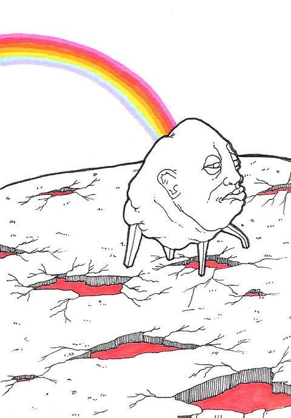

|

Acuario.
Este año las energías del Universo te influirán muy positivamente, terminarás tus estudios universitarios, tendrás suerte y conseguirás un trabajo. Todo saldrá de maravilla, en su paso normal: colgarás en el closet tus chancletas, tus pantalones rotos, tu camisa del Che, tu pelo descuidado, tus convicciones y te pondrás los zapatos embetunados, la camisa formal y la corbata rumbo a la oficina.
Piscis.
Tus Astros indican éxito en tu vida social. Serás de l@s primeros en adoptar la nueva vertiente de moda hipster-pipi-jipi (o jipipster): el reggaeton será aceptado en los mejores clubes de Nueva York por destacados diseñadores de moda urbana franceses. Estos puede que editen un disco recopilado de los mejores exponentes del género, tal vez denominado: “Remix-collage: The psychodelic-exotic multicultural way of the third world (or the Banana Republics is cool)”. Comprarás las últimas ropas de la vertiente, leerás algún artículo chistoso del llamado Elvis de la teoría cultural (Zizek), te sentirás muy identificad@ con tu cool identidad latinoamericana y tu morena piel multicultural.
Aries.
Tu situación astral indica que tu vida íntima va a modificarse y mejorar. Tu padre va a acabar su racha sin trabajo, va a encontrar un trabajo mal pagado y explotado. Vas a poder pasar más tiempo con tu novi@ a solas en casa y así tratar de no tener polvos de gallo forzados por el miedo a ser sorprendid@s en los rincones más escondidos del colegio.
|
Tauro.
Tu Luna y tu Planeta tendrán un extraño cruce de Energías. Sin embargo, ante tus crisis de ansiedad al estar hasta el cuello de deudas y trabajo exasperante, no debés de unirte con tus colegas y tratar de colgar al patrono explotador para administrar ustedes mism@s la empresa. Mejor andá a un buen psicoterapeuta o a un consejero espiritual y te ayudará a encontrar paz interior. La crisis es una crisis de Conciencia (véase al respecto Krishnamurti 2002; Steve Jobs 2010; Stalin 2003; Justin Bieber 2012; Derrida 2005; Cohelo 2000; Juan Pablo II 2001).
Géminis.
Las pesas de tu báscula se van a mover según diferentes Energías Astrales. Vas a odiar a tus maestros este año, te van a hacer la vida imposible, te van a bajar puntos por mal comportamiento, por contestar, por no poner atención. Sin embargo, si perseverás en el futuro te podrás graduar como buen maestr@ que tenga estudiantes a los cuales hacer la vida imposible.
Cáncer.
Con relación al dinero tu intuición energética te dará una sorpresa agradable. Aceptarás la gran oferta de una tarjeta de crédito con la cual podrás comprar todo aquello -y más- que tus amistades compraron en las festividades pasadas y vos no pudiste comprar. Así se retrasará tu “cuesta de enero”, para luego convertirse en la “cuesta de todos los meses”.
Leo.
El paso del Sol por tu signo expresa que serás despedid@ de tu trabajo en plena cuesta de enero y tus hij@s entrando a clases. Sin embargo, puede que te lo tomés positivo, salgás al Sol unas horas al día, absorbás su energía y sonriás ante tu desgracia porque de todo lo malo se aprende y te reconfortará saber que todas las grandes personas exitosas con imperios comerciales tuvieron que pasar por esa valiosa experiencia alguna vez.
Virgo.Tu signo anda convulso, tu padre va a ser despedido y a vos como herman@ mayor de 4 hijos te va a tocar dejar de estudiar para empezar a trabajar. Bienvenid@ al campo de batalla.
|
Libra.
Las pesas de tu báscula muestran que tu salud mejorará. El cielo se te va a optimizar mucho, el Sol incandescente de verano no te molestará más, ya que el manto de smog que caracteriza a San José creará un efecto de luz hermoso y protector para tu piel. Por otro lado, aunque no fumás es probable que contraigas alguna enfermedad pulmonar. Una de cal y otra de arena: esta será tu moraleja a aprender.
Escorpio.
Tu Planeta anda galanteando, en cuestiones del amor debés de tener cuidado. Los últimos días has estado respondona con tu marido, eso está muy mal para la estabilidad familiar. Sonreíle y servíle una cena especial, que esa es la mejor forma de sentirse llena.
Sagitario.
Toda tu vida comiste comida sana y vegetariana, mantuviste tu línea, no fumaste e hiciste ejercicio diario. Ahora, tu signo astral expresa que tal vez cuando caminás por una de las calles sin aceras ¡sás! verás que aquel cuerpo bien cuidado se reduce a una masa amorfa. Si se diera el caso de que seás muy ágil y esquivés el carro, de todos modos saldrá una mega-rata de las comunes de cualquier cañería y te devorará sin dejar rastro.
Capricornio.
Este año será un año especial. El 2012, el Año del Apocalipsis, tendrá tremendas repercusiones en vos. Sufrirás lluvia ácida en tu cabeza directa desde las plantaciones infinitas de piña y banano. Te caerán ríos de agua podrida encima por la mala distribución del espacio urbano. No podrás llamar a emergencias porque tendrás el celular de Telefónica cortado por los altísimos precios. La CCSS estará carísima por los precios debido a la competencia y no tendrás cobertura de salud. Tu banco quebrará debido a la crisis de la economía del país y se llevará todo tu dinero. Al final morirás lentamente sin derecho a la eutanasia ni a drogas divertidas porque son ilegales. Pero no te preocupés porque la vida terrenal es insignificante, aún te queda la oportunidad de ir al Cielo, a la casa de como quieras llamarle: Dios, Buda, Pachamami, Alá. el SIn Nombre, Maradona, Messi Reloaded, etc.
|